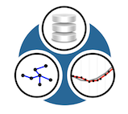

|  |
EPANET-RTX
1.1
real-time extension for the EPANET toolkit
|
This is the complete list of members for RTX::SqlitePointRecord, including all inherited members.
| _cachedPoint (defined in RTX::PointRecord) | RTX::PointRecord | protected |
| _cachedPointId (defined in RTX::PointRecord) | RTX::PointRecord | protected |
| _pointCache (defined in RTX::PointRecord) | RTX::PointRecord | protected |
| addPoint(const string &id, Point point) (defined in RTX::DbPointRecord) | RTX::DbPointRecord | virtual |
| addPoints(const string &id, std::vector< Point > points) (defined in RTX::DbPointRecord) | RTX::DbPointRecord | virtual |
| availableData() (defined in RTX::SqlitePointRecord) | RTX::SqlitePointRecord | virtual |
| BufferMutexPair_t typedef (defined in RTX::BufferPointRecord) | RTX::BufferPointRecord | |
| BufferPointRecord(int defaultCapacity=100) (defined in RTX::BufferPointRecord) | RTX::BufferPointRecord | |
| dbConnect() (defined in RTX::SqlitePointRecord) | RTX::SqlitePointRecord | virtual |
| DbPointRecord() (defined in RTX::DbPointRecord) | RTX::DbPointRecord | |
| errorMessage (defined in RTX::DbPointRecord) | RTX::DbPointRecord | |
| firstPoint(const string &id) (defined in RTX::BufferPointRecord) | RTX::BufferPointRecord | virtual |
| identifiers() (defined in RTX::SqlitePointRecord) | RTX::SqlitePointRecord | virtual |
| insertRange(const std::string &id, std::vector< Point > points) (defined in RTX::SqlitePointRecord) | RTX::SqlitePointRecord | protectedvirtual |
| insertSingle(const std::string &id, Point point) (defined in RTX::SqlitePointRecord) | RTX::SqlitePointRecord | protectedvirtual |
| insertSingleInTransaction(const std::string &id, Point point) (defined in RTX::SqlitePointRecord) | RTX::SqlitePointRecord | protected |
| invalidate(const string &identifier) (defined in RTX::DbPointRecord) | RTX::DbPointRecord | virtual |
| isConnected() (defined in RTX::SqlitePointRecord) | RTX::SqlitePointRecord | virtual |
| KeyedBufferMutexMap_t typedef (defined in RTX::BufferPointRecord) | RTX::BufferPointRecord | |
| lastPoint(const string &id) (defined in RTX::BufferPointRecord) | RTX::BufferPointRecord | virtual |
| name() (defined in RTX::PointRecord) | RTX::PointRecord | |
| path() (defined in RTX::SqlitePointRecord) | RTX::SqlitePointRecord | |
| point(const string &id, time_t time) | RTX::DbPointRecord | virtual |
| pointAfter(const string &id, time_t time) (defined in RTX::DbPointRecord) | RTX::DbPointRecord | virtual |
| pointBefore(const string &id, time_t time) (defined in RTX::DbPointRecord) | RTX::DbPointRecord | virtual |
| PointBuffer_t typedef (defined in RTX::BufferPointRecord) | RTX::BufferPointRecord | |
| PointRecord() (defined in RTX::PointRecord) | RTX::PointRecord | |
| pointsInRange(const string &id, time_t startTime, time_t endTime) | RTX::DbPointRecord | virtual |
| range(const string &id) (defined in RTX::SqlitePointRecord) | RTX::SqlitePointRecord | virtual |
| registerAndGetIdentifier(std::string recordName, Units dataUnits) (defined in RTX::SqlitePointRecord) | RTX::SqlitePointRecord | virtual |
| removeRecord(const std::string &id) (defined in RTX::SqlitePointRecord) | RTX::SqlitePointRecord | protectedvirtual |
| request (defined in RTX::DbPointRecord) | RTX::DbPointRecord | protected |
| reset() (defined in RTX::DbPointRecord) | RTX::DbPointRecord | virtual |
| reset(const string &id) (defined in RTX::DbPointRecord) | RTX::DbPointRecord | virtual |
| searchDistance() (defined in RTX::DbPointRecord) | RTX::DbPointRecord | |
| selectNext(const std::string &id, time_t time) (defined in RTX::SqlitePointRecord) | RTX::SqlitePointRecord | protectedvirtual |
| selectPrevious(const std::string &id, time_t time) (defined in RTX::SqlitePointRecord) | RTX::SqlitePointRecord | protectedvirtual |
| selectRange(const std::string &id, time_t startTime, time_t endTime) (defined in RTX::SqlitePointRecord) | RTX::SqlitePointRecord | protectedvirtual |
| setName(std::string name) (defined in RTX::PointRecord) | RTX::PointRecord | |
| setPath(std::string path) (defined in RTX::SqlitePointRecord) | RTX::SqlitePointRecord | |
| setSearchDistance(time_t time) (defined in RTX::DbPointRecord) | RTX::DbPointRecord | |
| sharedPointer typedef (defined in RTX::SqlitePointRecord) | RTX::SqlitePointRecord | |
| SqlitePointRecord() (defined in RTX::SqlitePointRecord) | RTX::SqlitePointRecord | |
| supportsBoundedQueries() (defined in RTX::SqlitePointRecord) | RTX::SqlitePointRecord | virtual |
| time_pair_t typedef (defined in RTX::PointRecord) | RTX::PointRecord | |
| toStream(std::ostream &stream) (defined in RTX::BufferPointRecord) | RTX::BufferPointRecord | virtual |
| truncate() (defined in RTX::SqlitePointRecord) | RTX::SqlitePointRecord | protectedvirtual |
| ~BufferPointRecord() (defined in RTX::BufferPointRecord) | RTX::BufferPointRecord | inlinevirtual |
| ~DbPointRecord() (defined in RTX::DbPointRecord) | RTX::DbPointRecord | inlinevirtual |
| ~PointRecord() (defined in RTX::PointRecord) | RTX::PointRecord | inlinevirtual |
| ~SqlitePointRecord() (defined in RTX::SqlitePointRecord) | RTX::SqlitePointRecord | virtual |